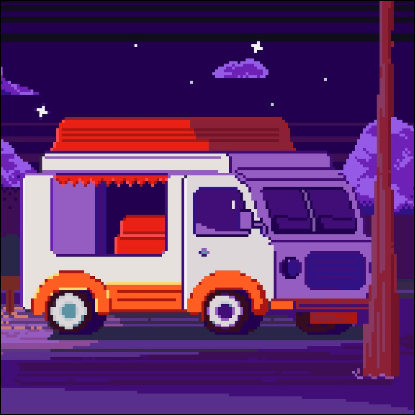

-
Фритрек и нулевой спринт: Подготовка к работе
<welcome to the club>
Это было самое начало пути. На этом этапе важно было проникнуться основами и настроиться на учебу. И, возможно, подумать, как новые знания могут повлиять на ваше будущее.
-
1 спринт: Я — чистый лист
<new beginning>
На первых этапах мы работали со страхами и сомнениями, которые часто испытывают новички. Один из них — страх перед чистым листом. Это, конечно же, намного сложнее, чем боязнь куска бумаги. Часто за этим ощущением скрываются более глубокие вопросы: с чего начать? а вдруг будет слишком сложно? что, если я не справлюсь?
Лично для меня начало обучения было довольно легким. Мотивация была на высоте, что очень помогало. Особо трудных тем не было, поэтому я мог спокойно проходить матераил, нигде сильно не задерживаясь.
-
1 спринт: А если не получится?
<anxiety joined chat>
Первый проект — позади! Но это все еще самое начало пути. Радость могла быстро померкнуть и смениться ожиданием провала. Или вы, наоборот, могли вдохновиться успехами и поверить в себя.
Первый спринт я закончил меньше, чем за 2 недели. На самом деле, даже не заметил, как эти недели пронеслись. Не могу сказать, что было очень трудно. Я не сидел за теорией более 2 часов в день. Прокет, в свою очередь, все-таки заставил меня немного повалноваться. Если в теории вопросов вообще не было, то над проектом надо было немного подумать.
-
2 спринт: Погоня за идеалом
<f0cos>
На этом этапе вы уже достаточно разбирались в основах верстки, чтобы понять, как много еще впереди. Вы могли попытаться погнаться за идеалом и понять, что он недостижим. А, может, вы вовсе и не подвержены перфекционизму и вместо того, чтобы сделать идеально, старались просто сделать..
Второй спринт начался также легко. Мотивация еще не угасла, я был полон сил. Помня первый спринт, я особо не волновался, что что-то не успею.
-
2 спринт: О тех, кто рядом
</support>
Все это время вы были не одиноки (хотя, возможно, иногда и чувствовали, что одни против целого мира). Вас окружали одногруппники, команда сопровождения и просто близкие люди, которым можно пожаловаться, если очередной макет просто так не поддавался. Осваивать что-то новое легче, когда рядом есть единомышленники, не правда ли?
Я практически все время работал один. Все же, в то время, как теорию с легкостью можно пройти самому, на проектах помощь наставника просто необходима. Студенты тоже часто помогают с вопросами. Очень классно, когда есть люди, заинтересованные помочь другим. Большая им всем благодарность.
-
3 спринт: Обходные стратегии
<mind games>
На этом курсе вы постоянно решали разные задачи. В какой-то момент вам могло показаться, что решения просто иссякли. Значит, пришло время посмотреть на задачу под другим углом.
Третий спринт, как не странно, начался так же легко, как и первые два. Мотивация все еще присутствовала, хотя теория пошла однозначно хуже. Приходилось уже задумываться и над задачами в тренажере. Хотя, буду честным, тренажер зачастую работал не очень и воспринимал не все решения(но возможно, что я сам уже немного тупил).
-
3 спринт: Когда опускаются руки
<where real work begins>
Во время учебы часто возникает чувство, когда не знаешь, за что хвататься. Вроде и проектную пора сдавать, и задачи хочется порешать, и в теории получше разобраться, и жизнь не забыть пожить. В такие моменты очень нужна концентрация. Вспомните, откуда вы ее черпали.
Под конец третьего спринта начались проблемы. В связи с некоторыми обстоятельствами, я забросил обучение примерно на месяц. После того, как не мог пару дней заставить себя сеть за учебу, мотивация пропала окончательно. Я кое-как прошел теорию и сдал проект уже после мягкого дедлайна. Меня заставило заняться учебой то, что жесткий дедлайн по двум спринтам уже через три недели, а у меня еще предыдущий не закрыт. Менять когорту на третьем месяце обучения - такое себе.
-
«Сейчас я здесь»
<fun?>
Сейчас вы уже очень много знаете о верстке. Но это только начало. Во-первых, впереди еще много материала про «красотищу». Во-вторых, с окончанием курса учеба не заканчивается. Верстка — это целый мир. И этот мир постоянно меняется. Познать его полностью не получится, но это тот случай, когда важен сам процесс познания. Ведь часто путь — и есть результат.
Сейчас все, чего мне хочется, - это закрыть четвертый спринт до дедлайна.